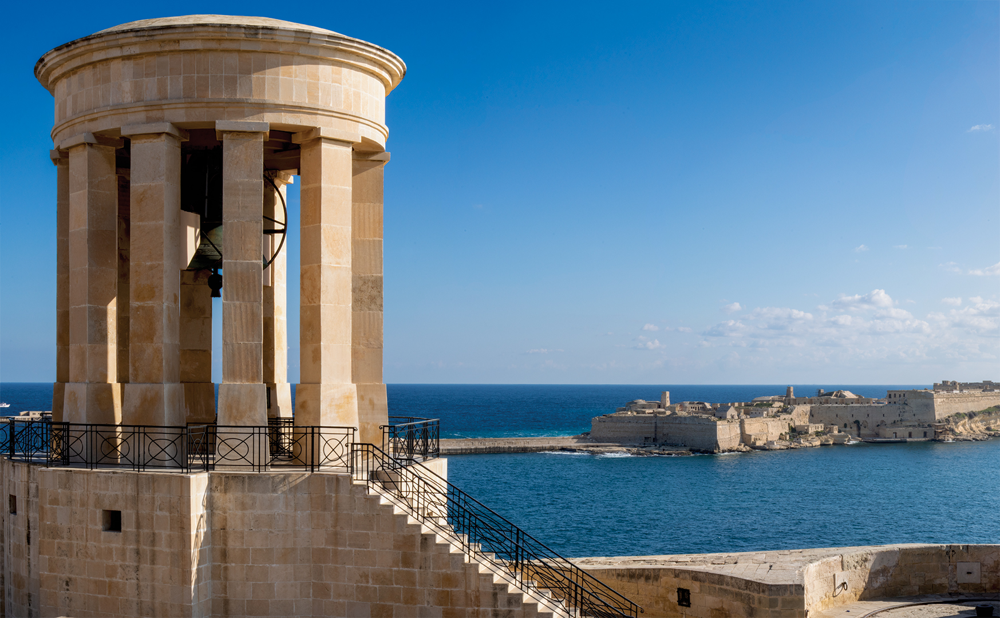
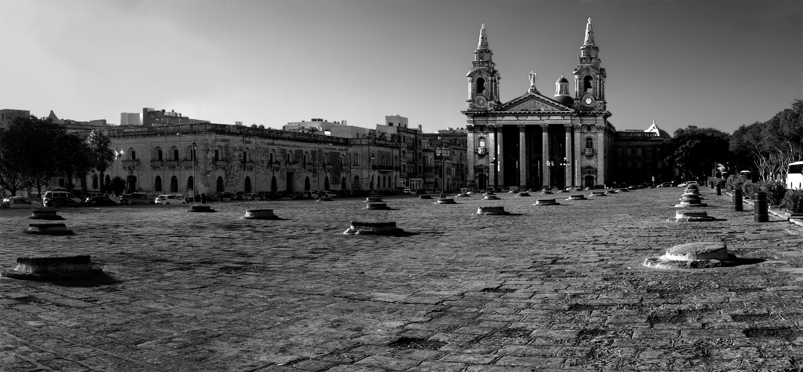
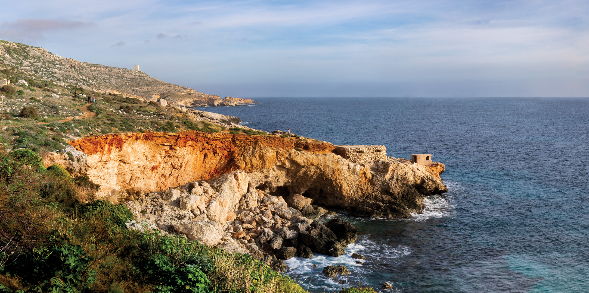
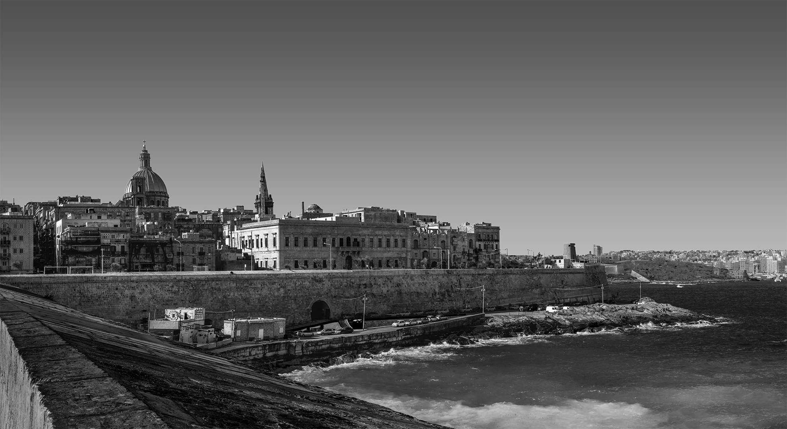
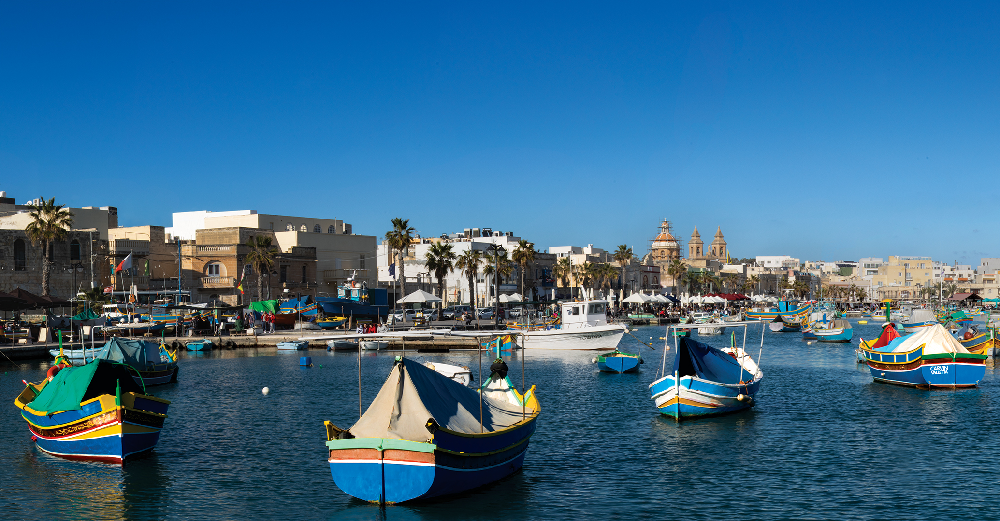
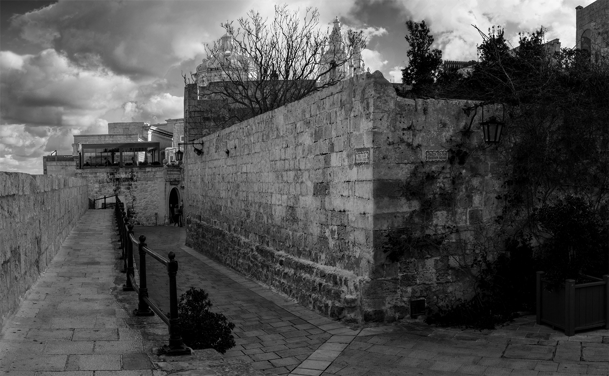
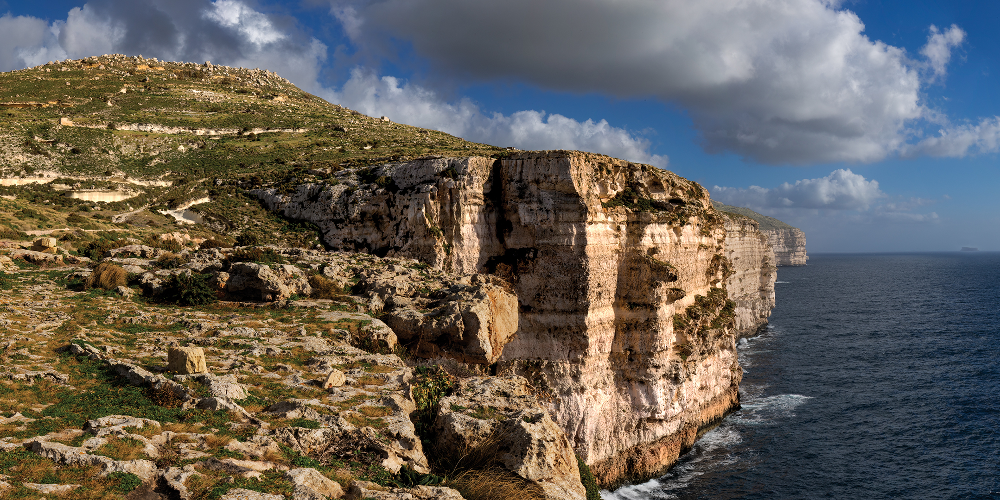
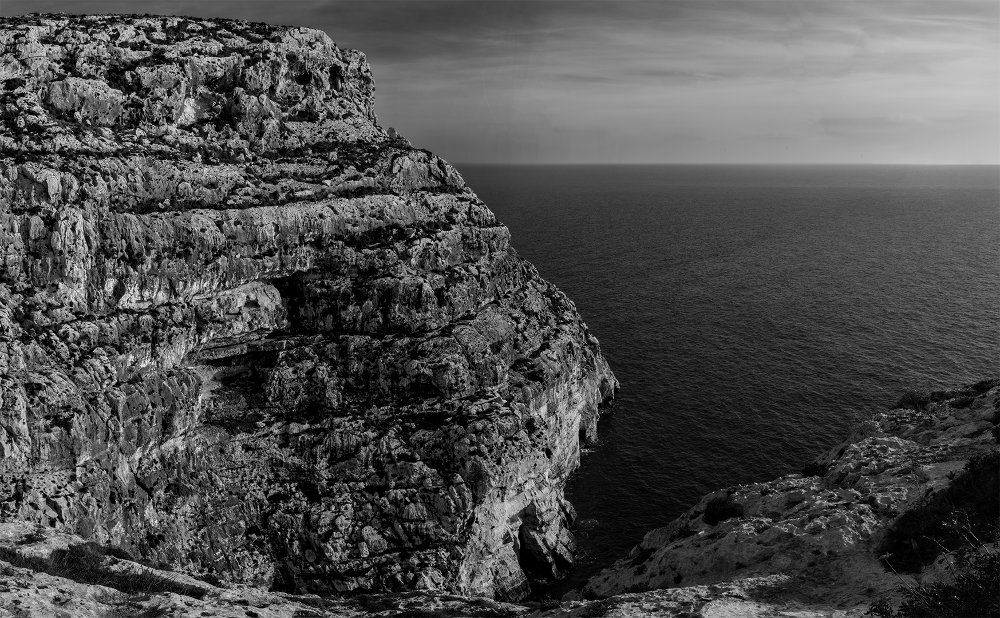

|  |
Lower Barrakka, Valletta |
|  |
Fosos, Furjana |
 |
Abandoned House, Marsaxlokk |
 |
Castle, Lapsi |
|  |
Lapsi |
|  |
Marsamxett, Valletta |
|  |
Marsaxlokk Harbour |
 |
Mdina |
|  |
Triq is-Sur, Mdina |
 |
Migra l-Ferha, Mtahleb |
|  |
Mtahleb Cliffs |
 |
Notre Dame Gate, Birgu |
 |
Tigne Apartments, Sliema |
 |
Zabbar Church |
|  |
Wied Babu, Zurrieq |